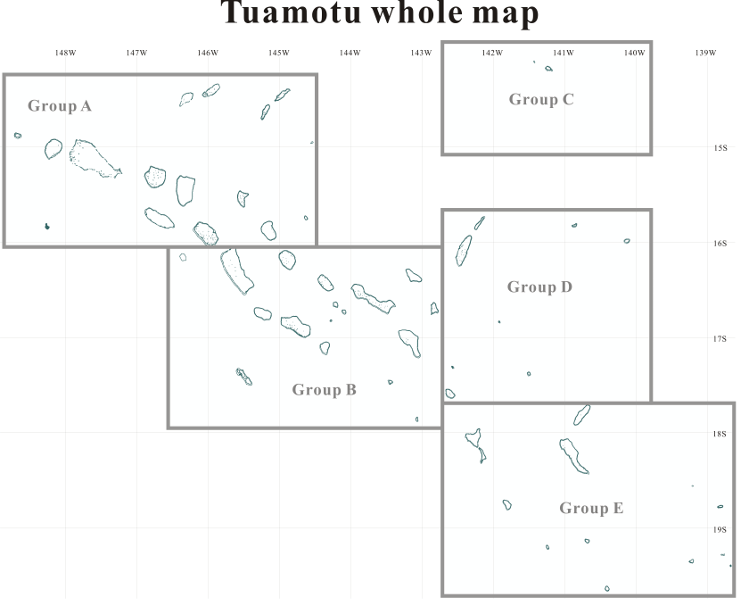

French Polynesia Tuamotu Archipelago
FS9/FSX Addon Scenery
Tuamotu Archipelago is located in the south Pacific Ocean and is part of the French Polynesia.
The archiperago scattered in the northeast of Tahiti island is composed of 78 islands.
The west edge of the archipelago is Mataiva island located in 14:53 South and 148:43 West.
The southeast edge reaches the Gambiers islands located in 23:09 South and 134:58 West.
Each island of the archipelago is made in a toroidal coral reef excluding the Makatea island.
They are islands like a beautiful necklace sprinkled in the tropical ocean.
The pictures that appear by clicking the following map are the screen shots of the scene
reproduced on the Microsoft Flight Simulator 2004 (FS9) and Flight Simulator X (FSX).
I thought I'd like to reproduce the beautiful atolls, lagoons
and reefs of the "Tuamotu Archipelago" on FS9/FSX.
I reproduced about fifty islands in the archipelago as add-on senery.

FS9/FSX Scenery "French Polynesia Tuamotu Archipelago" is registered in
"flightsim"
and "avsim".
This scenery is released as freeware.
It is divided into two files because of the data size.
 [Tuamotu Group B] - Niau
[Tuamotu Group B] - Niau
== Click the desired area ==

The Supplement:
I referred a lot of information to make these pages.
The data of the following Web sites were especially profitable for me:
Presidency of French Polynesia
Tuamotus - Wikipedia, the free encyclopedia
The grouping of above figure is
what I did expediently to introduce the Tuamotu Scenery.
Refer to the above links for actual grouping.
Tuamotu archipelago is also called
"The Chain Islands"
.
You can see why when you look at the northwest region of the archipelago,
the main atolls are spread out from the northwest to the
southeast looking like "twin chains".
The terrain data including undersea
indicates that there is a vast oceanic plateau underneath and the
entire "Chain Islands" are sitting right in the middle of it.